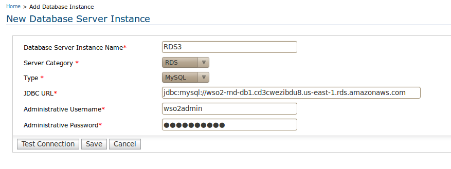
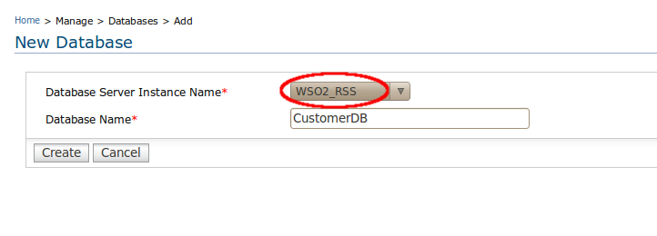
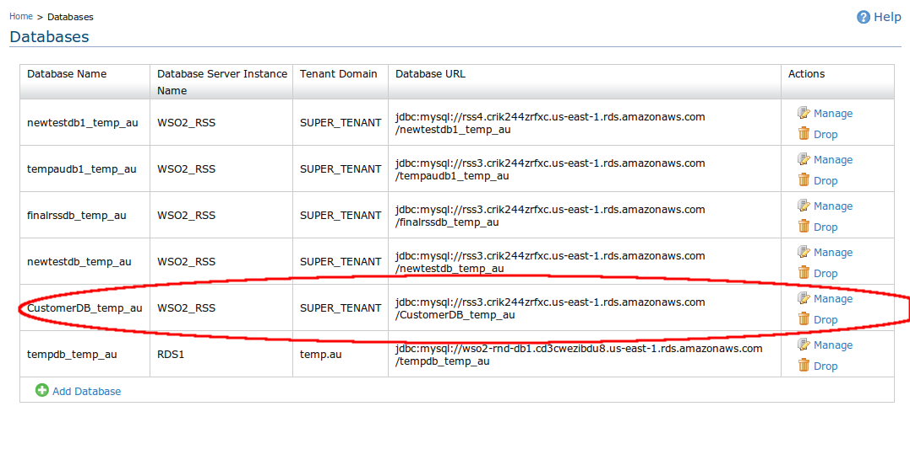
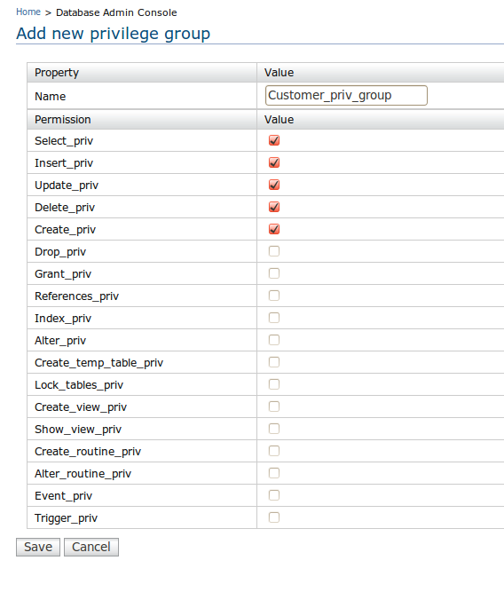
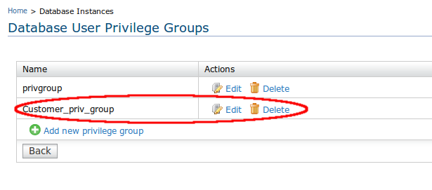
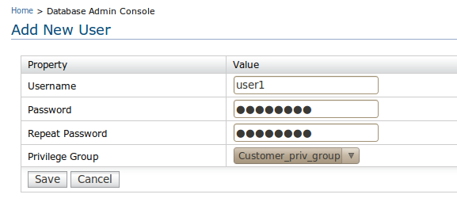
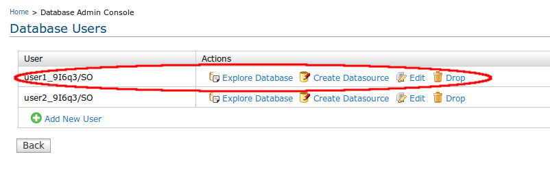

RSS Manager is a mechanism that provides its users with an easy to use management console to manipulate all their data related to applications running on a particular domain.
In order to add your own RDS instances to the system, you can use the "Database Server Instance" option which can be located under the "Configure" menu of the management console. You can fill up the fields depending on your preference and add your RDS instance to the system to be used as a data store for the applications running under your tenant domain.

The first step in the process of consuming WSO2 Relational Storage Service is to create a database for your application in the WSO2 RSS storage space. As the figure below depicts, the WSO2_RSS option together with the set of your own RDS instances that are configured to be used to manipulate your application data, will be listed out in the select box which carries the label "Database Server Instance Name". There you can either use WSO2 Relational Storage Service or your own RDS instances to create and consume your database. Once you select your preferred storage solution, you can then proceed with the creation of your database. The user is given the ability to specify a preferred name for the database under "Database Name". Once you click on the create button after fulfilling the aforementioned requirements, you will be able to create the database of your own choice to store the application data manipulated within your own domain.sole to manipulate all their data related to applications running on a particular domain.


In this step, the users are given control over coming up with their own permission schemes that will be granted to their database users later. As the figure below shows, it's simply a matter of selecting the permission just by clicking on the check boxes associated with a particular database permission which helps you avoid tedious tasks such as writing lengthy SQL queries and executing them to grant database privileges for a particular database user.


The "Add new user" user interface allows you to specify a name and a password of your choice for a particular user. It also lists down the prvilege groups that you created under step 1 so that you can select the appropriate permission scheme which is intended to grant the database user. Once you successfully fulfill the above requirements and click the save button which can be located at the bottom of the image, a database user will be created to be used in the data manipulative tasks carried out in your tenant domain.


Having successfully created a database and attached a database user, you now need to configure your database so that it suits your own requirements. This task is also made quite simple with the database explorer that we've integrated into the database management user interface by which you can execute your desired SQL schemas to configure the database the way you prefer. To get you redirected to the database explorer, click on the "Explore Database" option listed under the "Actions" category in the "Database Users" page.